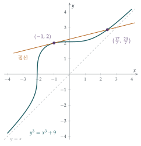

STEP I 2009, 문제 2
계속 읽기 전에 문제를 먼저 읽어 보자. 문제는 STEP Support Programme의 문제 데이터베이스에 있다: step.maths.org/questions/09-s1-q2
도입
얼핏 보면 평범한 좌표기하 문제이다. 미분하고, 접선(tangent)을 구하고, 삼차방정식을 푼다. 그런데 마지막 줄에서 세 세제곱수의 합이 되는 세제곱수를 찾으라고 하고, 기하가 마치 마법처럼 그런 수를 만들어 낸다.
곡선 위의 이미 아는 점을 지나는 직선을 그어 새로운 점을 찾는 이 기법은 3세기 알렉산드리아의 디오판토스(Diophantus)까지 거슬러 올라간다. 현대에 와서 이 기법은 타원곡선(elliptic curves) 이론으로 발전했다. 타원곡선은 오늘날 정수론의 한가운데에 있고, 페르마의 마지막 정리(Fermat’s Last Theorem)의 증명을 떠받치며, 전 세계 인터넷 통신의 상당 부분을 안전하게 지킨다.
시작하기 전에
점 \((-a, b)\)는 곡선 위에 있다. 왜 그런가? 그리고 이것이 세제곱수의 합과 무슨 관계가 있는가?
대입하면 \((-a)^3 + a^3 + b^3 = b^3\)이므로 그렇다. \(y^3 = x^3 + a^3 + b^3\) 위에서 좌표가 유리수(rational)인 점이 바로 우리가 원하는 것이다. \(x = q/s'\), \(y = p/s'\)이면 분모를 없앴을 때 세제곱수들 사이의 관계식이 나오기 때문이다. 계획은 쉬운 점 하나에서 출발하여 기하를 이용해 덜 뻔한 점을 찾는 것이다.
차근차근 풀기
단계 1 접선
\(y^3 = x^3 + a^3 + b^3\)을 음함수 미분(implicit differentiation)하면 \(3y^2 \dfrac{dy}{dx} = 3x^2\)이므로 \(\dfrac{dy}{dx} = \dfrac{x^2}{y^2}\)이다. \((-a, b)\)에서 기울기는 \(a^2/b^2\)이므로 접선은 \[y - b = \frac{a^2}{b^2}(x + a) \quad\Longrightarrow\quad b^2 y - b^3 = a^2 x + a^3 \quad\Longrightarrow\quad b^2 y - a^2 x = a^3 + b^3. \qed\]
단계 2 접선이 곡선과 다시 만나는 곳
\(a = 1\), \(b = 2\)일 때 곡선은 \(y^3 = x^3 + 9\)이고, \((-1, 2)\)에서의 접선은 \(4y - x = 9\), 즉 \(y = \dfrac{x + 9}{4}\)이다. 이를 곡선의 식에 대입하면 \[\frac{(x+9)^3}{64} = x^3 + 9 \quad\Longrightarrow\quad x^3 + 27x^2 + 243x + 729 = 64x^3 + 576,\] 이고, 정리하면 \(63x^3 - 27x^2 - 243x - 153 = 0\)이다. 양변을 \(9\)로 나누면 \(7x^3 - 3x^2 - 27x - 17 = 0\)을 얻는다.■
단계 3 삼차방정식 풀기
이 삼차방정식의 근 하나는 계산하지 않아도 이미 알고 있다. 그 근은 무엇이며, 왜 두 번 나타나야 하는가?
접선은 \(x = -1\)에서 곡선에 접하고(그림 1.9.1), “접한다”는 것은 중근(repeated root)을 뜻한다. 포물선의 접선이 포물선과 이차방정식의 중근에서 만나는 것과 같다. 따라서 \((x + 1)^2\)이 인수여야 한다. 확인해 보면 \(7(-1)^3 - 3(1) - 27(-1) - 17 = -7 - 3 + 27 - 17 = 0\)이고, 도함수 \(21x^2 - 6x - 27\)도 \(x = -1\)에서 \(0\)이 된다. 나누어 보면 \[7x^3 - 3x^2 - 27x - 17 = (x+1)^2 (7x - 17).\]
따라서 접선은 \(x = \frac{17}{7}\)에서 곡선과 다시 만난다. \(y\)를 구하고, 이 점을 세제곱수들 사이의 관계식으로 바꾸어 보아라.
\(y = \dfrac{17/7 + 9}{4} = \dfrac{80/7}{4} = \dfrac{20}{7}\)이다. 점 \(\bigl(\frac{17}{7}, \frac{20}{7}\bigr)\)은 \(y^3 = x^3 + 9\) 위에 있으므로 \[\frac{20^3}{7^3} = \frac{17^3}{7^3} + 9 \quad\Longrightarrow\quad 20^3 = 17^3 + 9 \times 7^3.\]
\(9 \times 7^3\)을 두 세제곱수의 합으로 나타내고 싶다. \(9\)가 어디에서 왔는지 떠올려 보아라.
\(9 = a^3 + b^3 = 1^3 + 2^3\)이므로 \(9 \times 7^3 = 7^3 + 14^3\)이다. 따라서 \[20^3 = 17^3 + 14^3 + 7^3.\] 검산: \(8000 = 4913 + 2744 + 343\).■

돌아보기
접한다는 것은 중근을 뜻한다. 덕분에 뻔한 근이 없어 보이던 삼차방정식을 곧바로 인수분해할 수 있었다.
새 근은 저절로 유리수가 된다. 세 근 중 두 근이 유리수이면(여기서는 둘 다 \(-1\)), 근의 합 \(\frac{3}{7}\)이 유리수이므로 나머지 한 근도 유리수여야 한다. 이것이 이 방법의 핵심이다.
기하가 산술을 만들어 냈다. 우리는 세제곱수를 찾아 헤맨 적이 없다. 접선 하나가 그것을 찾아 주었다.
숨은 수학
\(y^3 = x^3 + 9\)나 더 표준적인 꼴인 \(y^2 = x^3 + Ax + B\) 같은 삼차곡선을 생각하자. 그 위에서 좌표가 유리수인 두 점을 알면, 두 점을 지나는 직선은 곡선과 정확히 한 점에서 더 만나고, 그 점의 좌표도 유리수이다(돌아보기의 논증에 의해). 한 점만 알 때에는 그 점에서의 접선을 대신 쓴다. 어느 쪽이든 기존의 유리점에서 새로운 유리점이 만들어진다.
놀랍게도 이 “할선–접선(chord–tangent)” 작도는 곡선 위의 점들을 더하는 방법으로 바꿀 수 있고, 그러면 유리점들은 군(group)을 이룬다. 군은 대학 1학년 때 배우게 될 대수적 구조이다. 1922년 Louis Mordell은 이 군이 유한개의 점으로 생성된다는 것을 증명했다. 즉 유리점이 아무리 많더라도 모두 유한집합에서 출발하여 할선과 접선으로 만들어 낼 수 있다. 그의 증명은 1.5 절에서 다룬 페르마의 강하법(descent)의 한 형태이다.
오늘날의 타원곡선
이런 곡선을 타원곡선이라고 부른다(타원이어서가 아니라, 타원의 호의 길이와 역사적으로 연관되어 있기 때문이다). 타원곡선은 현대 수학 곳곳에 등장한다.
페르마의 마지막 정리. 1980년대에 Gerhard Frey는 \(x^n + y^n = z^n\)의 해가 있다면 매우 이상한 타원곡선이 만들어진다는 것을 알아차렸다. 1994년 앤드루 와일스(Andrew Wiles)는 그런 이상한 곡선이 존재할 수 없음을 증명했고, 그리하여 페르마의 마지막 정리를 증명했다.
버치–스위너턴다이어 추측. 유리점들의 군에는 생성원(generator)이 몇 개 필요할까? 1960년대에 케임브리지에서 수학 역사상 가장 이른 컴퓨터 실험 중 일부를 이용하여 세워진 추측(conjecture)은, 소수(prime)를 법으로 하여 점의 개수를 세어 만든 함수를 통해 그 답을 예측한다. 이 버치–스위너턴다이어 추측(Birch and Swinnerton-Dyer conjecture)은 7대 밀레니엄 문제(Millennium Prize Problems) 가운데 하나이다.
암호학. 유한한 수 체계 위의 타원곡선에서는 점 \(P\)를 자기 자신에 \(n\)번 더하는 계산이 빠르다. \(n\)이 수백 자리 수라도 그렇다(거듭제곱을 반복 제곱으로 계산하듯 \(P\)를 거듭 두 배하면 된다). 그러나 \(P\)와 결과 \(nP\)가 주어졌을 때 \(n\)을 찾는 것은 극도로 어려운 것으로 보인다. 이것이 타원곡선 이산 로그 문제(elliptic-curve discrete logarithm problem)이다. 이 비대칭성이 오늘날 온라인 통신의 상당 부분을 보호한다.
같은 차수의 거듭제곱의 합
세 양의 세제곱수의 합이 되는 가장 작은 세제곱수는 \(6^3 = 3^3 + 4^3 + 5^3\)이다. 접선 방법으로 찾은 \(20^3 = 7^3 + 14^3 + 17^3\)은 이것의 배수가 아니며, 이 방법을 되풀이하면 새로운 항등식이 계속 나온다(다만 음수가 섞인 것도 있다). 어떤 \(k\)제곱수를 만들려면 \(k\)제곱수가 몇 개 필요할까? 오일러(Euler)는 1769년에 다른 \(k\)제곱수를 만들려면 적어도 \(k\)개의 \(k\)제곱수가 필요하다고 추측했다. 네제곱과 다섯제곱에 대해서는 이 추측이 틀렸다. 1966년 Leon Lander와 Thomas Parkin은 컴퓨터 탐색으로 \[27^5 + 84^5 + 110^5 + 133^5 = 144^5\] 를 찾았고, 1988년 Noam Elkies는 타원곡선을 이용해 네제곱에 대한 반례를 찾았다.
사고 기술
방정식의 정수해나 유리수해를 찾으려면, 방정식을 곡선으로 보고 이미 아는 점을 지나는 직선을 찾아보아라.
그 뒤에 있는 대수는 간단하다. 유리수 계수 다항식의 근이 하나를 빼고 모두 유리수이면, 마지막 근도 유리수이다. 이처럼 그림과 방정식 사이를 오가는 것은 수학자가 지닐 수 있는 가장 강력한 습관 가운데 하나이다.
더 도전하기
원 위의 유리점. \((-1, 0)\)을 지나고 기울기가 \(t\)인 직선은 원 \(x^2 + y^2 = 1\)과 다시 만난다. 다른 교점이 \(\left(\dfrac{1 - t^2}{1 + t^2}, \dfrac{2t}{1 + t^2}\right)\)임을 보이고, 이를 이용하여 피타고라스 세 쌍(Pythagorean triples)을 무수히 많이 만들어라.
빗나가는 할선. 점 \((1, 2)\)와 \((2, 1)\)은 \(x^3 + y^3 = 9\) 위에 있다. 두 점을 지나는 직선이 곡선과 다른 점에서 만나지 않음을 보여라. “세 번째 점”은 어디로 갔을까? (무한원점(point at infinity)을 찾아보아라.)
기법을 되풀이하기. \(\bigl(\frac{17}{7}, \frac{20}{7}\bigr)\)에서 \(y^3 = x^3 + 9\)의 접선을 구하고, 그 접선이 곡선과 만나는 세 번째 점을 구하여라. (컴퓨터 대수 시스템이 도움이 된다. 수가 얼마나 빨리 커지는지 살펴보아라.)
택시 수. \(1729 = 1^3 + 12^3 = 9^3 + 10^3\)이다. \((1, 12)\)와 \((9, 10)\)을 지나는 직선이 곡선 \(x^3 + y^3 = 1729\)와 만나는 세 번째 점을 구하고, 이로부터 \(p^3 = q^3 + r^3 + s^3\) 꼴의 새로운 항등식을 이끌어 내어라.
더 읽을거리
Joseph Silverman & John Tate, Rational Points on Elliptic Curves (Springer). 『타원곡선 위의 유리점』. 학부생을 위해 쓰인 책으로, 1장은 A 레벨(A level, 영국의 대학 입시 과목 시험) 이상의 지식이 필요하지 않다.
Avner Ash & Robert Gross, Elliptic Tales (Princeton University Press). 『타원 이야기』. 버치–스위너턴다이어 추측까지 이어지는 대중서이다.
Simon Singh, Fermat’s Last Theorem. 『페르마의 마지막 정리』. 타원곡선이 어떻게 350년 묵은 문제를 풀게 되었는지 들려준다.